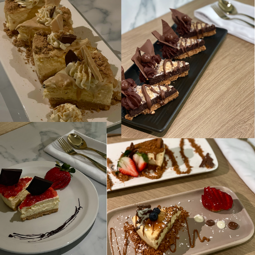
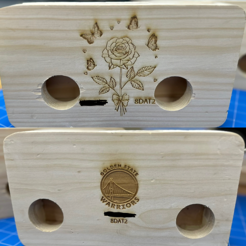
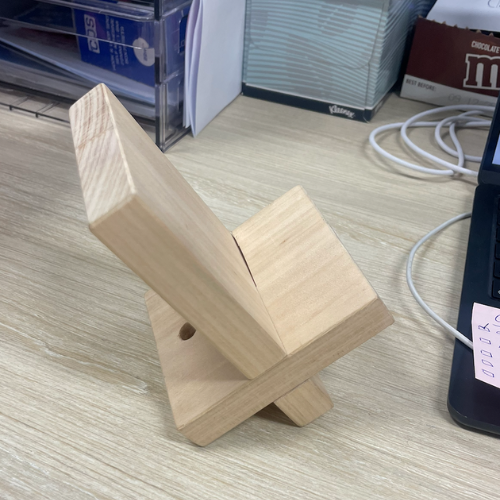
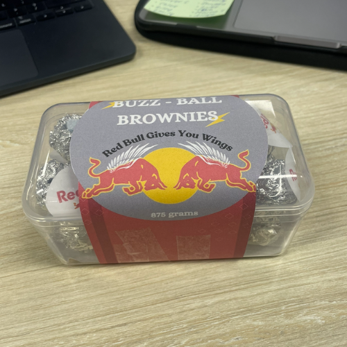

Teaching Portfolio Samples of Work
One of the most rewarding aspects of teaching in TAS, is seeing students bring their ideas and designs to life. This page highlights a collection of student work samples under my guidance that illustrate their creativity, understanding and growth in learning. Each piece reflects the impact of a supportive learning environment that upholds strong teaching practices to showcase student talent in the classroom.

Year 10 Food Technology
Example of a Food Technology Project for Year 10

Year 8 Engineering
Example of an Engineering Project for Year 8

Year 8 Engineering
Example of an Engineering Mini Project for Year 8

Year 12 Food Technology
Example of a Food Technology Project for Year 12